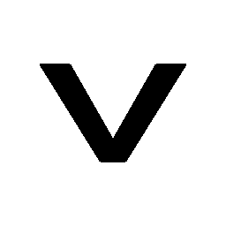
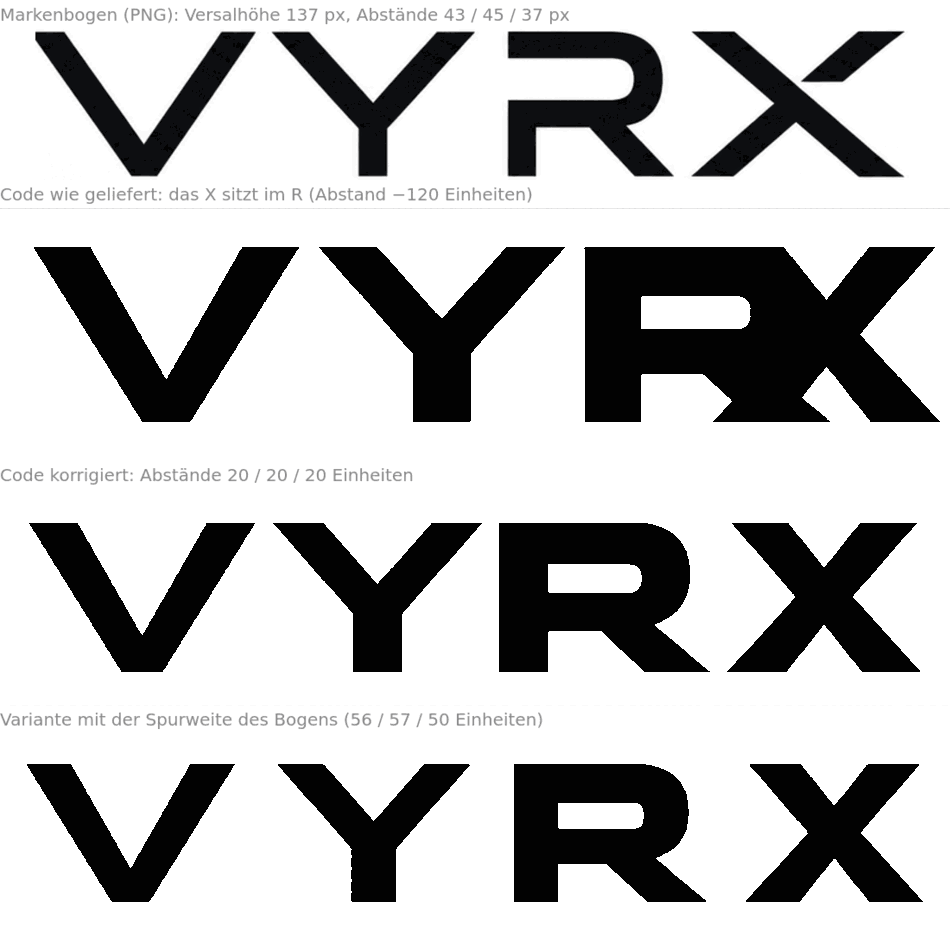
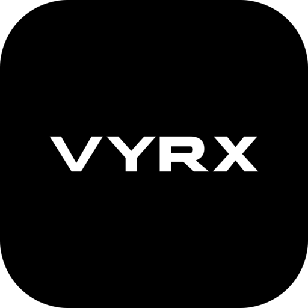
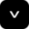
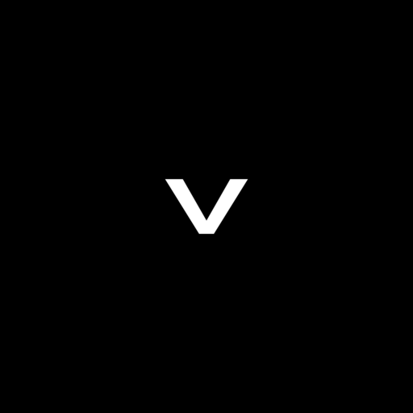
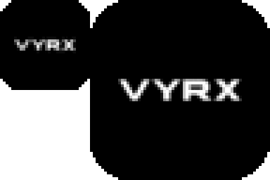
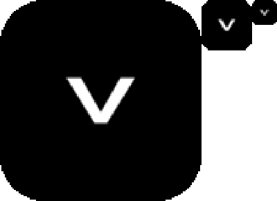
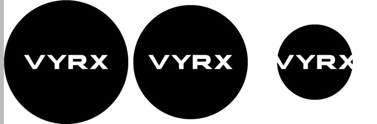

mark.svg — V, freiVYRX. Logo — Paket und Prüfung
Zwei Lieferungen liegen vor: ein Stück Code (SVG-Pfade) und ein Markenbogen als PNG. Beide sind vermessen, gerendert und verglichen. Aus der Geometrie des Codes ist ein vollständiges Satzzeichen geworden — Favicon, App-Symbol, maskable, Teilen-Karte.
1. Markenbogen gegen Code

| Maß | Markenbogen (PNG) | Code (SVG-Pfade) |
|---|---|---|
| Versalhöhe | 137 px | 185 Einheiten |
| Breite V / Y / R / X | 194 / 167 / 149 / 185 px | 280 / 260 / 260 / 240 |
| Breite, auf Versalhöhe 185 normiert | 262 / 225 / 201 / 250 | 280 / 260 / 260 / 240 |
| Abstände | 43 / 45 / 37 px → 58 / 61 / 50 normiert | 20 / 20 / −120 |
| Buchstaben im Paar R|X | getrennt | verschmolzen |
Was daraus folgt. Der Bogen ist keine maßstäbliche Vorlage für den Code: die Buchstaben des Codes sind breiter (Y +16 %, R +29 %, normiert), und der Code setzt sie etwa dreimal enger. Das eine ist Geschmack (Zeile 3 oder Zeile 4), das andere ein Fehler (Zeile 2): das X liegt 120 Einheiten im R.
2. Quadratmarke und Favicon

App-Symbol (Bogen-Stil)favicon 16

favicon 32
maskableDer Bogen zeigt als App-Symbol die Wortmarke in der Kachel. Bei 32 px ist sie ein Fleck (links unten, 8× vergrößert) — deshalb trägt das Favicon das V, die Kachel für den Startbildschirm weiterhin die Wortmarke.

Kachel mit Wortmarke, 32 und 64 px, 8×
Favicon mit V, 128/32/16 px, 8×3. Im Browser
VYRX · Dezentrale Plattform & Mesh
VYRX · Dezentrale Plattform & Mesh
Dunkler und heller Reiter: die Kachel gibt dem Zeichen auf beiden einen Rand. Ein frei stehendes dunkles V wäre auf dem dunklen Reiter unsichtbar — deshalb die Kachel.
4. Maskenprobe

Kreis mit 100 %, 92 % und 61 % der Kachelbreite. Bis 92 % — dem
Android-Fall „66 von 72 dp sichtbar“ — hält die Wortmarke. Bei 61 %, der garantiert
sichtbaren Fläche eines adaptiven Symbols, schneidet die Maske V und X an.
Darum ist die maskable-Fassung das V auf voller Fläche, nicht die Wortmarke.
5. Vorschau beim Teilen (1200 × 630)
6. Einbau (Vorschlag, noch nicht im Repository)
<!-- src/layouts/Layout.astro --> <link rel="icon" href="/favicon.ico" sizes="any"> <link rel="icon" type="image/svg+xml" href="/mark.svg"> <link rel="apple-touch-icon" href="/apple-touch-icon.png"> <link rel="manifest" href="/site.webmanifest"> <meta name="theme-color" content="#000000"> <meta property="og:image" content="https://vyrx.de/vyrx-og.png">
Achtung, sonst nutzlos: /favicon.ico und /manifest.webmanifest gehen
heute durch den Outpost und antworten mit 302 auf auth.vyrx.de. Öffentliche Pfade müssen im
Ingress ausgenommen sein — sonst holt der Browser für jedes Symbol eine Anmeldung.
7. Was der Bogen an Text mitbringt
SMARTER CONNECTIONS · A BRIGHTER TOMORROW— noch kein deutscher Satz; die Übersetzungsdatei kennt ihn nicht (Parität wäre Pflicht, H1).NETWORK · SECURITY · SMART HOME · YOU— „Smart Home“ deckt der Katalog nur einmal ab (home-assistant); sieben Kacheln sind Medien, fünf „AI & Agents“.- Die Landung sagt heute „Enterprise Architecture & Cloud Platform“ und „Zero-Trust Edge“ — Falschsprache gegen die eigene Regel (Klartext vor Fachsprache) und gegen den Ton des Bogens („YOU“).